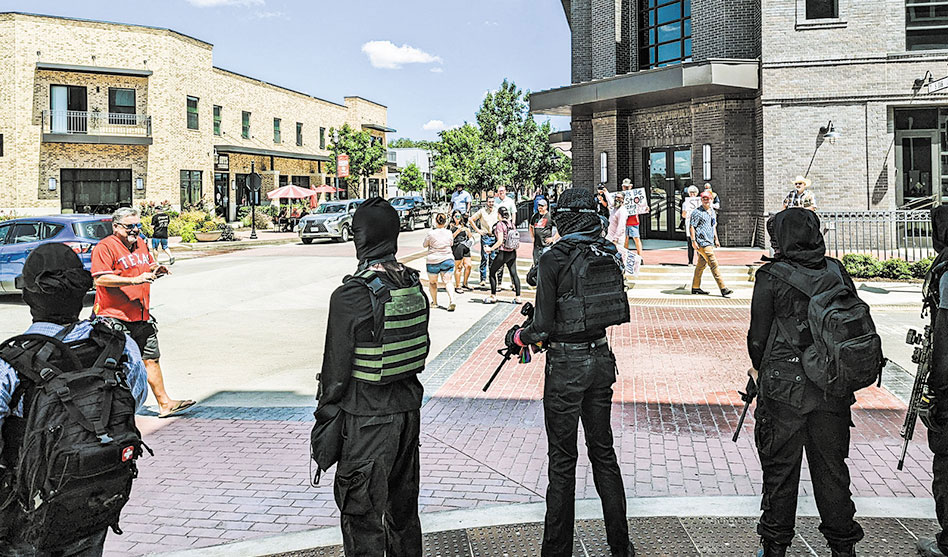
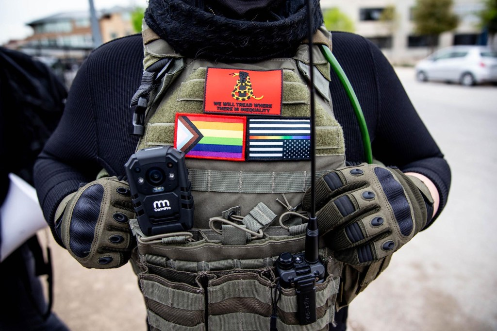
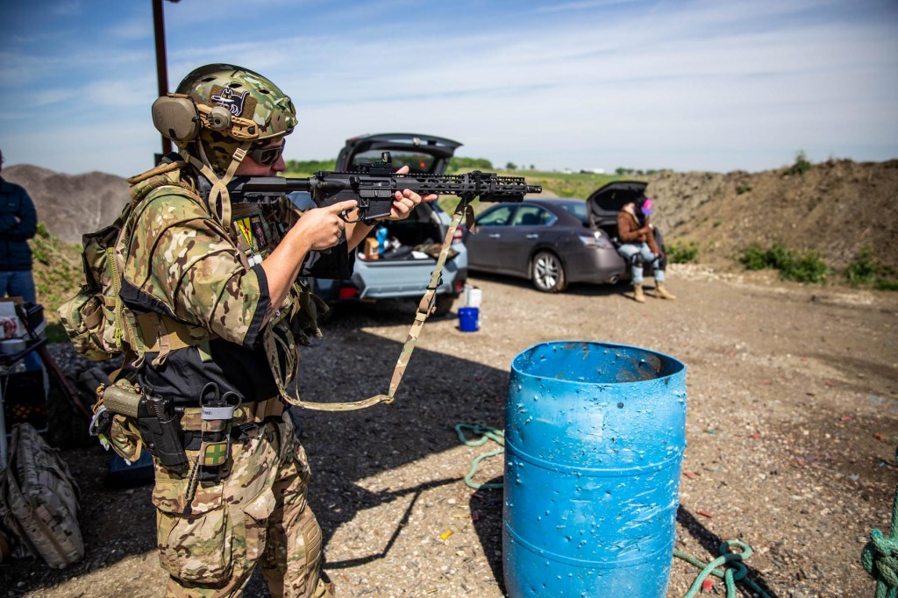
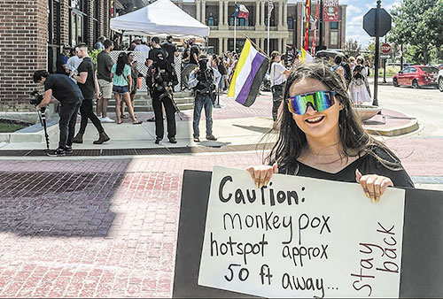
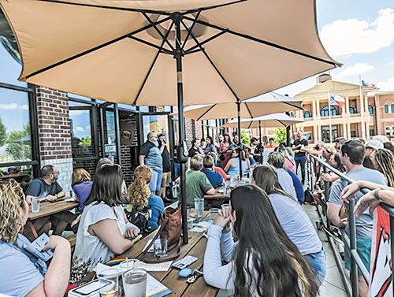
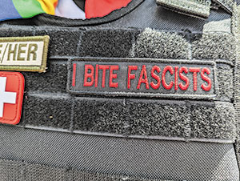
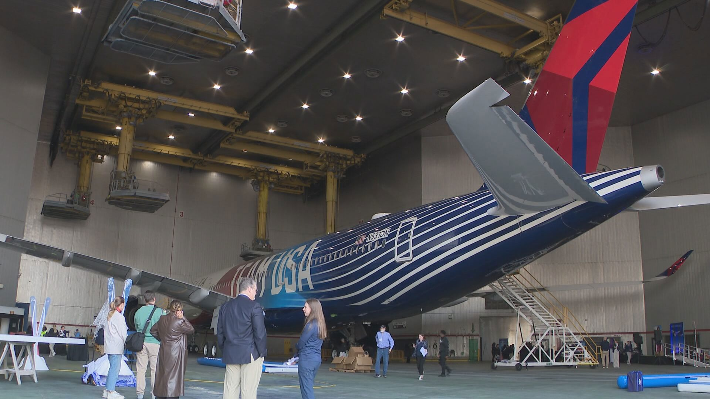

Classification: UNCLASSIFIED // FOR OFFICIAL USE
ONLY
Prepared For: Texas State Militia
Date: January 2026
AO: Dallas-Fort Worth Metroplex, Texas
The Dallas-Fort Worth metroplex presents a moderate-to-elevated threat environment for conservative political organizations. The region has experienced significant civil unrest activity since 2020 and contains active cells of multiple left-wing activist and armed groups.
Primary Threat Actors: - Antifa-affiliated networks — Decentralized cells with documented presence in North Texas; linked to the July 2025 Prairieland ICE facility attack resulting in federal terrorism charges - Elm Fork John Brown Gun Club — Armed left-wing group with established DFW presence; documented confrontations at drag shows and political events - Black Lives Matter affiliates — Multiple chapters with varying activity levels; reduced operational tempo since 2020 peak - DSA North Texas — Democratic Socialists of America chapter with organizing committees across the metroplex; primarily focused on electoral/labor organizing
Secondary Considerations: - Right-wing groups (Patriot Front HQ’d in Grapevine-Haslet area) may create association/optics risk or counter-protest dynamics - Lone actor threats remain a concern given political polarization
| Date | Incident | Relevance |
|---|---|---|
| July 4, 2025 | Prairieland ICE Detention Center attack | 11 arrested, police officer shot, first federal antifa terrorism charges |
| April 2023 | Fort Worth drag show confrontation | JBGC vs. right-wing protesters; arrests, viral video, lawsuit |
| May-June 2020 | George Floyd protests | Downtown Dallas looting, fires, police use of less-lethal munitions |
| Threat Type | Likelihood | Impact | Overall |
|---|---|---|---|
| Protest disruption at events | HIGH | MEDIUM | ELEVATED |
| Physical confrontation | MEDIUM | HIGH | ELEVATED |
| Doxxing/online targeting | HIGH | MEDIUM | ELEVATED |
| Armed standoff | LOW | CRITICAL | MODERATE |
| Targeted violence | LOW | CRITICAL | MODERATE |
Full analysis follows in subsequent sections. # Area Overview
| Metric | Value | Source |
|---|---|---|
| MSA Population | 8,344,032 (July 2024) | US Census Bureau |
| NCTCOG Region | 8,481,512 (Jan 2024) | North Central Texas COG |
| National Rank | 4th largest metro | Census Bureau |
| Annual Growth | +177,922 (2023-2024) | Census Bureau |
| Growth Rank | 3rd fastest growing US metro | Census Bureau |
| City | Population (2024 est.) | Notes |
|---|---|---|
| Dallas | ~1.35 million | Core city, liberal-leaning |
| Fort Worth | 1,008,106 | 2nd million+ city in metro, more conservative |
| Arlington | ~400,000 | Between Dallas/FW, mixed |
| Plano | ~290,000 | Northern suburb, affluent |
| Garland | ~240,000 | Eastern suburb |
| Irving | ~240,000 | Between Dallas/FW |
| Frisco | ~230,000 | Fast-growing northern suburb |
The DFW metroplex spans approximately 9,300 square miles across 13 counties. Key geographic features relevant to security planning:
DFW is politically purple, with significant variation between urban cores (Democratic-leaning) and suburban/exurban areas (Republican-leaning). The region has trended slightly more Democratic in recent cycles, particularly in Dallas County and inner suburbs.
| County | Lean | Notes |
|---|---|---|
| Dallas | D+15-20 | Solidly Democratic; Dallas proper is deep blue |
| Tarrant | Swing/R+2-5 | Historically Republican, increasingly competitive |
| Collin | R+5-10 | Trending purple; Plano/Frisco growing more competitive |
| Denton | R+8-12 | Republican but Denton city is college town (UNT) |
| Rockwall | R+25+ | Strongly Republican |
| Ellis | R+20+ | Strongly Republican |
| Kaufman | R+15-20 | Republican, rapid growth |
Urban-Suburban Divide: Conservative political organizations can expect more favorable reception in Tarrant County (especially southern/western areas), Collin County suburbs, and exurban counties. Dallas proper and inner-ring suburbs skew progressive.
Texas State Politics: Despite blue urban pockets, Texas remains a Republican trifecta state. State-level support and legal framework generally favorable to conservative organizations.
Activist Concentration: Left-wing activist groups primarily concentrate in Dallas proper, Denton (UNT), and urban Fort Worth. Suburban events face lower (but non-zero) protest risk.
The murder of George Floyd (May 25, 2020) triggered significant protests across DFW:
Following the 2020 peak, protest activity declined but never ceased: - Ongoing BLM-affiliated demonstrations (smaller scale) - Abortion rights protests following Dobbs decision (2022) - Drag show confrontations (2022-2024) — see Threat Landscape section - Various anti-Trump/anti-MAGA demonstrations
July 4, 2025 — Prairieland ICE Facility Attack: - 11 individuals arrested following an armed confrontation at Prairieland Detention Center in Alvarado (south of Fort Worth) - Police officer shot in the neck - First-ever federal terrorism charges against alleged antifa-affiliated defendants - DOJ alleges coordinated attack with rifles, pistols, body armor - Multiple defendants from Dallas area - Case ongoing; some pleading guilty, others facing additional charges
September 2025: - Trump administration formally designates “Antifa” as a domestic terrorist organization - Increased federal law enforcement focus on left-wing extremism - Activist community response: heightened operational security, some groups going dormant
Ongoing: - “No Kings” and anti-Trump protests continue - Immigration-related demonstrations - Continued drag event confrontations # Threat Landscape
Overview:
Antifa (“anti-fascist”) is a decentralized movement rather than a formal
organization. In North Texas, antifa-aligned individuals operate through
informal networks, often overlapping with other left-wing groups. No
single “chapter” exists; rather, cells form around specific actions or
campaigns.
Key Characteristics: - Decentralized, cell-based structure - Heavy emphasis on operational security (masks, anonymity, encrypted communications) - Tactical focus on “direct action” — confrontation, disruption, property destruction - Increasingly subject to federal scrutiny following September 2025 domestic terrorism designation
DFW Presence:
The July 2025 Prairieland attack revealed an active North Texas cell.
Per court filings: - 11+ individuals arrested - Operated from
Dallas-area residence - Had access to rifles, pistols, body armor -
Demonstrated willingness to engage law enforcement
Threat Assessment:
Following Prairieland and the terrorism designation, antifa-affiliated
activity in DFW has likely decreased operationally due to federal
pressure, but the ideological base remains. Conservative political
events are considered legitimate targets in antifa ideology.
| Factor | Assessment |
|---|---|
| Capability | MEDIUM-HIGH (demonstrated armed capability) |
| Intent | HIGH (explicit ideological opposition) |
| Current Activity | REDUCED (federal pressure) |
| Overall Threat | ELEVATED |
Overview:
The John Brown Gun Club is a national network of armed left-wing groups
named after the abolitionist. The Elm Fork chapter operates in the DFW
area and is one of the most active JBGC branches nationally.
Key Characteristics: - Openly armed; members carry rifles, pistols at events - Describes itself as providing “community defense” against “white supremacists/fascism” - Active at drag shows, LGBTQ+ events, and left-wing demonstrations - Uses social media for recruitment and coordination - Members wear masks/face coverings for anonymity
DFW Activities (Documented): - 2022-2024: Regular armed presence at drag shows across DFW (Dallas, Fort Worth, Princeton, Grand Prairie) - April 2023: Confrontation with right-wing protesters at Fort Worth drag brunch; arrests made; viral video; subsequent lawsuit by New Columbia Movement - December 2022: Armed counter-protest at suburban drag event; documented confrontation with militia members carrying barbed-wire bat
Tactics: - Arrive armed and in numbers to events they perceive as threatened - Positioning to intercept/deter right-wing protesters - Have used pepper spray/mace on protesters (documented 2023) - Primarily defensive posture but willing to initiate physical confrontation
Relationship to Antifa:
Ideological overlap is significant; some individuals may participate in
both JBGC and antifa-style actions. JBGC is more publicly visible due to
open-carry activities.
Social Media: - Active on Twitter/X, Instagram - Known to block critics quickly - Uses platforms for event coordination
Threat Assessment:
| Factor | Assessment |
|---|---|
| Capability | HIGH (openly armed, trained) |
| Intent | MEDIUM (defensive focus but will confront) |
| Current Activity | ACTIVE |
| Overall Threat | ELEVATED |
Overview:
BLM in DFW consists of multiple loosely affiliated groups rather than a
single chapter. Activity has declined significantly from 2020 peak.
Key Groups: - Next Generation Action Network: Organized major 2020 protests in Dallas - Dallas Truth, Racial Healing and Transformation (TRHT): Partners with City of Dallas on equity initiatives - Various informal community groups
Current Status:
Nationally, BLM support declined from 67% (2020) to 45% (2024). Local
chapters have lower visibility and reduced operational tempo. Most
activity now focuses on: - Anniversary commemorations - Police
accountability advocacy - Coalition building with other progressive
groups
Tactics: - Marches, rallies, vigils - Social media campaigns - Partnerships with institutional actors (city government, churches) - Generally non-violent; 2020 events saw property destruction primarily by opportunists rather than organized BLM
Threat Assessment:
| Factor | Assessment |
|---|---|
| Capability | MEDIUM (mobilization capacity for large events) |
| Intent | LOW-MEDIUM (not specifically targeting conservatives) |
| Current Activity | LOW |
| Overall Threat | LOW-MODERATE |
Overview:
DSA is the largest socialist organization in the US. The North Texas
chapter covers the DFW metroplex with organizing committees in Fort
Worth, Collin County, and Denton.
Key Characteristics: - Focus on electoral politics, labor organizing, mutual aid - Not a direct-action or confrontational group - ~5,400 Instagram followers (DSA North Texas) - Youth chapters at McKinney HS and UTD
Activities: - Candidate endorsements (progressive Democrats, occasional socialists) - Labor campaign support - Tenant organizing - Medicare for All advocacy - Occasional protest participation (coalition events)
Threat Assessment:
DSA is primarily a political organizing group, not a security threat.
However: - Members may participate in broader protest coalitions -
Provides ideological/logistical support network for other groups - Some
individual members may be involved in more confrontational activities
separately
| Factor | Assessment |
|---|---|
| Capability | LOW (not a direct-action group) |
| Intent | LOW (electoral focus) |
| Current Activity | MODERATE |
| Overall Threat | LOW |
Overview:
The SRA is a national left-wing gun rights organization. A Dallas-area
presence has been documented alongside John Brown Gun Club.
Key Characteristics: - Focus on firearms training and education for leftists - Less confrontational than JBGC; more emphasis on training - Membership overlaps with JBGC and DSA
Threat Assessment:
| Factor | Assessment |
|---|---|
| Capability | MEDIUM (armed, trained) |
| Intent | LOW (training focus, not confrontational) |
| Current Activity | LOW-MODERATE |
| Overall Threat | LOW |
Several single-issue groups may intersect with conservative political events:
Abortion Rights Groups: - Elevated activity since Dobbs (2022) - Target anti-abortion events, crisis pregnancy centers - Groups: Lilith Fund, Fund Texas Choice, local Planned Parenthood affiliates
Trans Rights / LGBTQ+ Advocates: - Active at any event perceived as anti-LGBTQ+ - Coalition with JBGC for armed protection - Groups: Equality Texas, local PFLAG chapters, ad hoc groups
Immigration Advocates: - Elevated activity under current administration - Focus on ICE facilities, detention centers, deportation flights - Groups: LULAC, ACLU Texas, various sanctuary networks
Climate Activists: - Less prominent in DFW than coastal cities - Occasional intersection with progressive coalitions
Included for full threat picture; these groups are not direct threats to the client but create important contextual dynamics.
Overview:
Patriot Front is a white nationalist, neo-fascist organization
headquartered in the DFW suburbs (Grapevine-Haslet
area). This is highly significant — DFW is the operational center of one
of the most active white supremacist groups nationally.
Key Characteristics: - Originated from Vanguard America after Charlottesville (2017) - Primary activity: propaganda distribution (stickers, banners, flyers) - Conducts flash demonstrations in matching uniforms - Texas leads nation in white supremacist propaganda incidents - Members engage in fitness training, marches
Relevance to Client: - Association Risk: Conservative events may attract Patriot Front attendance or be perceived as aligned - Counter-Protest Dynamics: PF presence can escalate confrontations with antifa/JBGC - Media/Optics: Any association (real or perceived) is reputationally damaging
Recommendation: Explicitly disavow and exclude white nationalist groups from events; have security prepared to remove individuals displaying PF symbols.
Overview:
Neo-fascist group with documented Texas presence. Less organizationally
prominent in DFW than Patriot Front.
Relevance: - May attend conservative events - History of violent confrontations nationally - Similar association/optics concerns as Patriot Front
Overview:
Christian nationalist group active in DFW area, particularly around drag
show protests.
Activities: - Regular protests at drag events - Filed lawsuit against Elm Fork JBGC following April 2023 confrontation - Generally non-violent protest tactics
Relevance: - Their protests draw JBGC counter-protests - Conservative events may attract their attendance - Lower risk profile than PF/Proud Boys from association standpoint
The highest-impact but lowest-probability threat. Political polarization increases lone actor risk across the spectrum.
Considerations: - Conservative figures have been targeted nationally (e.g., Charlie Kirk assassination, Sept 2025) - No specific intelligence on DFW-based lone actor threats to conservative orgs - Standard protective measures apply
Large gatherings (protests or events) attract criminal activity: - Theft, robbery targeting attendees - Property crime against venues - Not ideologically motivated but creates security burden
| Group | Capability | Intent | Activity | Overall |
|---|---|---|---|---|
| Antifa Networks | MED-HIGH | HIGH | REDUCED | ELEVATED |
| Elm Fork JBGC | HIGH | MEDIUM | ACTIVE | ELEVATED |
| BLM Affiliates | MEDIUM | LOW-MED | LOW | LOW-MOD |
| DSA-NTX | LOW | LOW | MODERATE | LOW |
| Socialist Rifle Assn | MEDIUM | LOW | LOW-MOD | LOW |
| Single-Issue Groups | LOW-MED | VARIES | VARIES | LOW-MOD |
| Patriot Front | — | — | — | Assoc. Risk |
| Lone Actors | HIGH | UNKNOWN | — | MODERATE |
Date: May 29 – June 2020 (peak); sporadic through
summer
Location: Downtown Dallas, primarily around Dallas
Police HQ, City Hall, Deep Ellum
Timeline: - May 29, 2020: Initial protest organized by Next Generation Action Network outside Dallas Police HQ. Nearly 1,000 attendees. Peaceful during day. - May 29-30 overnight: Situation escalated. Protesters clashed with police. Looting began in downtown (Neiman Marcus flagship store among targets). Dumpster fires set. Windows smashed. - May 30, 2020: Continued protests. Police deployed tear gas, pepper spray. Multiple civilians struck by “less lethal” rounds, including documented injuries. - Following days: Protests continued at reduced intensity. Curfew implemented.
Outcomes: - 100+ arrests over first week - Property damage in millions (downtown retail) - Several lawsuits against Dallas PD for use of force - Two DPD officers later accused of assault for shooting protesters with less-lethal rounds - “Black Lives Matter” painted in front of Dallas City Hall
Lessons Learned: - Large protests can escalate rapidly after dark - Criminal opportunists exploit protest cover - DPD response capacity can be overwhelmed - Downtown Dallas is primary protest magnet
Date: May-June 2020
Location: Downtown Fort Worth, Sundance Square area
Summary:
Parallel protests occurred in Fort Worth but were generally smaller and
less violent than Dallas. Some confrontations with police but no
comparable looting/destruction.
Overview:
Starting in 2022, drag events across DFW became flashpoints for
confrontation between right-wing protesters (Christian nationalist
groups, militia-adjacent individuals) and left-wing counter-protesters
(primarily Elm Fork John Brown Gun Club).
Key Incidents:
November-December 2022 — Various Suburbs: - Right-wing protesters targeted drag brunches in Dallas suburbs - JBGC began providing armed “security” at events - One incident involved right-wing protester with barbed-wire bat - Confrontations but no major violence
April 2023 — Fort Worth (Fort Brewery & Pizza): - New Columbia Movement protested drag show - Elm Fork JBGC counter-protested - Physical confrontation ensued - Three JBGC members arrested - Viral video showed police arresting counter-protesters - NCM subsequently filed civil lawsuit against JBGC - JBGC accused of using mace on protesters
2024 — Continued Lower-Level Confrontations: - Pattern continued at various venues - Both sides adapted tactics - No major escalation
Relevance:
Demonstrates that JBGC is willing to: - Deploy armed members to events -
Physically confront opponents - Accept arrests - Operate despite
legal/civil consequences
Date: July 4, 2025 (late evening)
Location: Prairieland Detention Center, Alvarado, TX
(Johnson County, south of Fort Worth)
Summary:
The most significant left-wing extremist incident in DFW history. First
federal terrorism charges against alleged antifa-aligned defendants.
Timeline: - Earlier July 4: Small peaceful protest at facility during daytime - ~10:37 PM: Group of 11-12 individuals gathered near facility - Several dressed in black “military-style” clothing - Group allegedly armed with rifles, pistols; some wearing body armor - Shots fired; police officer struck in neck (survived) - Suspects fled; apprehended over following days
Arrests:
11 individuals initially arrested, including: - Savanna Batten — prior
protest-related arrests - Ines Soto — prior protest-related
arrests
- Additional defendants named in subsequent filings
Charges: - Providing material support to terrorists - Multiple counts of attempted murder - Federal riot charges - Explosive-related charges (some defendants)
Court Proceedings: - Multiple defendants made first appearances in Fort Worth federal court - Some defendants negotiating plea deals - Others facing additional charges - Case ongoing as of January 2026
Government Response: - FBI Director Kash Patel: “First time ever: the FBI arrested Antifa-aligned anarchist violent extremists and terrorism charges have been brought” - DHS cited 1,000% increase in attacks on ICE facilities - Migrants subsequently moved from Dallas ICE office to Prairieland - September 2025: Trump administration formally designates Antifa as domestic terrorist organization
Key Details from Court Filings: - Defendants conducted “gear check” at Dallas-area residence - At least one defendant allegedly stated intent to shoot police rather than be arrested - Planning involved encrypted communications - Group had access to significant weapons cache
Relevance:
This incident demonstrates: - Existence of armed, operationally capable
cells in North Texas - Willingness to engage law enforcement with lethal
force - Sophisticated planning and OPSEC - Current federal focus on
left-wing extremism may suppress but not eliminate threat
Date: September 22, 2025
Action: Presidential action designating “Antifa” as
domestic terrorist organization
Implications: - Enhanced federal investigative authorities - Material support charges now available - Increased scrutiny of affiliated individuals/groups - Some activists report going dormant or increasing OPSEC
May Day 2025:
Hundreds gathered across DFW for May Day protests focused on labor
rights, immigrant rights, anti-Trump messaging. Generally peaceful.
“No Kings” Protests (June 2025):
Coordinated anti-Trump protests across North Texas: - Dallas (Dealey
Plaza) - Fort Worth - Arlington - Denton - Frisco - McKinney - Multiple
other suburbs
Demonstrates continued mobilization capacity for large-scale coordinated action.
Incidents are more likely to escalate when: 1. Time of day: After-dark events have higher escalation risk 2. Counter-protests: Presence of opposing groups dramatically increases confrontation risk 3. Police presence: Insufficient or aggressive police response can trigger escalation 4. Symbolic dates: July 4, May Day, Juneteenth, election periods 5. Triggering events: Police shootings, court decisions, major political developments
| Location Type | Incident Frequency | Severity |
|---|---|---|
| Downtown Dallas | HIGH | MODERATE-HIGH |
| Downtown Fort Worth | MODERATE | MODERATE |
| Dallas suburbs | LOW-MODERATE | MODERATE |
| Exurban areas | LOW | HIGH (when occurs) |
| ICE/Federal facilities | MODERATE | HIGH |
Marches & Rallies: - Permitted or unpermitted marches on public streets - Rallies at symbolic locations (City Hall, Dealey Plaza, government buildings) - Chanting, signs, banners - Generally protected First Amendment activity
Civil Disobedience: - Blocking streets/intersections - Sit-ins at targeted locations - Refusal to disperse when ordered - Designed to provoke arrest for media attention
Noise Demonstrations: - Sustained noise-making outside targeted locations - Pots, pans, air horns, drums - Used to disrupt events without direct confrontation
Property Destruction: - Graffiti, vandalism - Window-breaking (black bloc tactic) - Arson (dumpsters, vehicles; rarely structures) - Targeting of corporate/government property over personal
Direct Confrontation: - Physical blocking of access - Surrounding/mobbing individuals - Pushing, shoving, striking - Use of improvised weapons (flagpoles, umbrellas, frozen water bottles)
Armed Presence: - Open carry of firearms (legal in Texas) - Displayed to deter opposition or project force - JBGC uses this regularly at events
When conservative events attract left-wing counter-protesters, the following pattern typically emerges:
Phase 1 — Intelligence Gathering: - Monitoring of event announcements, social media - Identification of date, time, location - Assessment of security posture
Phase 2 — Mobilization: - Calls to action on social media, Signal groups, encrypted channels - Coalition building with aligned groups - Logistics coordination (transportation, supplies)
Phase 3 — Deployment: - Arrival at or near event location - Positioning to maximize visibility/disruption - Banner drops, chanting, noise
Phase 4 — Confrontation (if escalation occurs): - Attempts to block access - Verbal harassment of attendees - Physical confrontation if barriers breached - Potential for violence if opposing groups clash
Phase 5 — Documentation: - Extensive filming/photography - Doxxing efforts (identifying attendees, speakers) - Social media amplification - Potential follow-up targeting of identified individuals
Definition:
Doxxing is the practice of publicly revealing private information about
individuals (real names, addresses, employers, family members) to enable
harassment or intimidation.
Open-Source Intelligence (OSINT): - Social media analysis - Public records searches - Facial recognition tools - License plate tracking - Cross-referencing event photos with online profiles
Photography at Events: - Systematic photography of attendees, vehicles - Focus on individuals without masks - License plates recorded
Publication: - Posting on social media, forums - Dedicated antifa “research” accounts - Anonymous tip lines to employers
See Section 9 (Recommendations) for detailed OPSEC guidance.
Groups like Elm Fork JBGC openly carry firearms to events. Key considerations:
Legal Status:
Open carry of long guns is legal in Texas without a permit. Handguns
require License to Carry (LTC) or permitless carry status.
Tactical Posture:
JBGC typically maintains a defensive posture — positioning between
event/attendees and opposing protesters. However: - Have demonstrated
willingness to initiate physical contact - Documented use of pepper
spray - Firearms presence creates escalation risk
Confrontation Risk:
Any physical confrontation involving armed individuals carries potential
for lethal escalation, even if neither side intends lethal force
initially.
Commonly observed at protests: - Pepper spray / OC spray - Bear mace - Fireworks / commercial-grade pyrotechnics - Rocks, bottles, cans - Improvised weapons (bike locks, flagpoles) - Laser pointers (eye injury risk)
Public: - Twitter/X (mobilization, public messaging) - Instagram (event promotion, recruitment) - Facebook (event pages, groups — declining use) - TikTok (recruitment, propaganda)
Semi-Private: - Discord servers - Telegram channels - Reddit (various leftist subreddits)
Encrypted: - Signal (primary secure comms) - Wickr - Matrix/Element
Antifa-aligned groups emphasize OPSEC: - Mask/face covering requirements - No photography of members - Encrypted communications for planning - Compartmentalized information (need-to-know) - Counter-surveillance awareness - Burner phones for actions
Implications:
Difficult to develop human intelligence on planned actions. Monitoring
of public channels provides limited warning.
Event Announcement → Sharing → Amplification: 1. Event posted publicly (by organizers or discovered by activists) 2. Shared to activist networks with call to action 3. Coalition groups amplify 4. Logistics coordinated in private channels 5. Post-event documentation and narrative control
Note: Specific account recommendations should be developed based on current OSINT. Accounts frequently change, get suspended, or go private.
General categories: - Local antifa-aligned accounts - JBGC official and affiliated accounts - DSA North Texas - Local BLM-affiliated accounts - Single-issue groups (abortion, immigration, LGBTQ+) - Left-wing media (Texas Observer, Courier Texas, etc.)
Activist networks maintain legal support infrastructure: - National Lawyers Guild (NLG) legal observers at protests - Know Your Rights training - Bail funds - Legal defense coordination
| Date | Event | Risk Level | Notes |
|---|---|---|---|
| January 6 | J6 Anniversary | MODERATE | Counter-protests at conservative events likely |
| January (3rd Monday) | MLK Day | LOW-MOD | Marches, rallies; generally peaceful |
| February (Black History Month) | Various events | LOW | Commemorative; low confrontation risk |
| March 8 | International Women’s Day | LOW-MOD | Feminist/abortion rights actions |
| March 31 | Trans Day of Visibility | MODERATE | LGBTQ+ events; potential flashpoint |
| April 20 | 4/20 | LOW | Cannabis-related; not politically charged |
| May 1 | May Day / International Workers’ Day | HIGH | Major left-wing mobilization day; labor, immigration, socialist |
| May 25 | George Floyd Anniversary | MODERATE | Commemorative marches; varies by year |
| June (Pride Month) | Various Pride events | HIGH | Drag events, parades draw counter-protests and JBGC |
| June 19 | Juneteenth | MODERATE | Federal holiday; marches, celebrations |
| July 4 | Independence Day | ELEVATED | 2025 Prairieland attack occurred; symbolic date |
| August 28 | March on Washington Anniversary | LOW | Occasional commemorations |
| September (Labor Day weekend) | Labor Day | LOW-MOD | Labor events, some protest activity |
| October 11 | Indigenous Peoples’ Day | LOW | Limited activity |
| November (Election Day) | Elections | HIGH | Peak political tension; varies by cycle |
| November 20 | Trans Day of Remembrance | MODERATE | Vigils; can draw opposition |
| December | Holiday period | LOW | Reduced activity |
| Date | Event | Relevance |
|---|---|---|
| November 3, 2026 | Midterm Elections | Major mobilization expected; TX Governor race |
| Various | Prairieland trial dates | Potential for solidarity protests |
| TBD | Supreme Court decisions | Abortion, immigration rulings could trigger rapid mobilization |
These events can trigger rapid mobilization with little warning:
Police Shootings / Use of Force: - Any police killing of Black/Latino individual in DFW - Particularly if video emerges - 24-72 hour mobilization window typical
Court Decisions: - Supreme Court rulings on abortion, immigration, LGBTQ+ rights - High-profile criminal verdicts (police officers, political figures) - Local court decisions in significant cases
Federal Immigration Enforcement: - ICE raids (especially workplaces, schools) - High-profile deportations - Detention center incidents - Policy announcements
Political Violence: - Attacks on left-wing figures/groups - Mass shootings (especially with political/racial motivation) - White supremacist incidents
Legislative Actions: - Texas legislature sessions (anti-trans bills, abortion restrictions, etc.) - Federal policy announcements
Local Government Actions: - City council votes on policing, homeless policy, development - School board decisions (book bans, DEI policy)
National Political Events: - Presidential speeches, rallies in Texas - Cabinet member visits - Major national protests with local solidarity actions
Conservative political organization events may specifically trigger response when:
News: - Dallas Morning News - Fort Worth Star-Telegram - Dallas Observer - Texas Observer - KERA News - Local TV stations (WFAA, FOX4, NBC5)
Activist Channels: - DSA North Texas social media - Local antifa-aligned accounts - JBGC accounts - Action Network event listings - Mobilize.us - Facebook event searches
Law Enforcement: - Dallas PD alerts - Fort Worth PD alerts - Texas DPS bulletins (if accessible)
Encrypted Channels: - Difficult to access; requires dedicated OSINT capability - Telegram public channels may provide some visibility
| Timeframe | Action |
|---|---|
| Ongoing | Automated social media monitoring |
| Weekly | Review activist event calendars |
| Pre-event (7 days) | Intensified monitoring of specific threats |
| Pre-event (48 hrs) | Check for mobilization calls |
| Day-of | Real-time social media monitoring |
These locations have historical protest activity and are likely targets for future demonstrations:
| Location | Address/Area | Historical Use | Risk Level |
|---|---|---|---|
| Dealey Plaza | 400 block Elm St | Major rallies, marches; “No Kings” protests | HIGH |
| Dallas City Hall | 1500 Marilla St | Government protests; BLM mural location | HIGH |
| Dallas Police HQ | 1400 S Lamar St | Police accountability protests | HIGH |
| Thanks-Giving Square | 1627 Pacific Ave | Vigils, smaller gatherings | MODERATE |
| Deep Ellum | Elm/Main St east of downtown | Entertainment district; spontaneous gatherings | MODERATE |
| Fair Park | 3921 Martin Luther King Jr Blvd | Large permitted events | LOW-MOD |
| Southern Dallas | Various | Community-based protests | MODERATE |
| Location | Address/Area | Historical Use | Risk Level |
|---|---|---|---|
| Sundance Square | Main/Houston St downtown | Central gathering point | HIGH |
| Tarrant County Courthouse | 100 W Weatherford St | Legal/political protests | MODERATE |
| Fort Worth PD HQ | 350 W Belknap St | Police accountability | MODERATE |
| Stockyards | N Main St | Tourist area; less common for protests | LOW |
| TCU Area | University Dr | Student activism | LOW-MOD |
| Location | City | Notes |
|---|---|---|
| Collin County Courthouse | McKinney | Growing activist presence |
| Denton Square | Denton | UNT student activism hub |
| Arlington City Hall | Arlington | Occasional protests |
| Frisco City Hall | Frisco | Growing suburban target |
| Various drag venues | Multiple | JBGC/right-wing flashpoints |
These locations attract immigration-related protests:
| Facility | Location | Risk Level |
|---|---|---|
| Prairieland Detention Center | Alvarado (Johnson Co.) | CRITICAL — site of July 2025 attack |
| Dallas ICE Field Office | 8101 N Stemmons Fwy | HIGH — targeted Sept 2025 |
| Earle Cabell Federal Building | 1100 Commerce St, Dallas | MODERATE — federal courthouse |
| Fort Worth Federal Building | 501 W 10th St | MODERATE |
| DFW Airport | — | Deportation flight protests |
Higher Risk Venues: - Downtown hotels/convention centers (accessible, visible) - Public parks (no access control) - University campuses (student activist base) - Venues with prior protest history
Lower Risk Venues: - Suburban hotels with controlled access - Private clubs/facilities - Exurban locations (reduced activist presence) - Venues with dedicated parking (vs. street parking)
Based on historical data, conservative event planners should be aware of elevated risk in:
Highest Incident Density: - Downtown Dallas (Main/Elm/Commerce corridors) - Downtown Fort Worth (Sundance Square area) - Deep Ellum entertainment district - Areas near ICE facilities
Moderate Incident Density: - Uptown Dallas - Oak Lawn (LGBTQ+ neighborhood) - University areas (SMU, UNT, TCU) - Inner-ring suburbs with diverse politics
Lower Incident Density: - Outer suburbs (Frisco, McKinney, Southlake, Keller) - Exurban areas - Strongly Republican counties (Rockwall, Ellis)
Arrival/Departure: - Avoid routes through downtown cores when possible - Identify protest-free ingress/egress routes - Have alternative routes planned - Consider timing to avoid peak protest hours (typically afternoon-evening)
VIP/Speaker Transportation: - Dedicated vehicles with security - Non-public arrival points (loading docks, private entrances) - Pre-positioned vehicles for rapid departure - Counter-surveillance awareness
Attendee Guidance: - Clear parking instructions (avoid street parking in protest-prone areas) - Recommended routes avoiding potential choke points - Communication plan for route changes day-of # Risk Assessment
Description: Left-wing activists learn of client event through public announcement or social media. They mobilize counter-protesters who gather outside venue, chant slogans, display banners, and attempt to block or harass attendees.
| Factor | Assessment |
|---|---|
| Likelihood | HIGH — Standard tactic; low barrier to execution |
| Impact | MEDIUM — Disruption, negative media, attendee discomfort |
| Overall Risk | ELEVATED |
Indicators: - Social media calls to action - Event shared in activist channels - Counter-event announced at same time/location
Mitigations: - Limit public announcement window - Select venue with buffer zone - Coordinate with law enforcement - Have security manage perimeter
Description: Confrontation between attendees and protesters escalates to physical altercation. Could involve pushing, punches, pepper spray, or improvised weapons.
| Factor | Assessment |
|---|---|
| Likelihood | MEDIUM — Requires escalation; depends on counter-protester posture |
| Impact | HIGH — Injuries, arrests, legal liability, media |
| Overall Risk | ELEVATED |
Indicators: - Known confrontational groups (JBGC) mobilizing - Online rhetoric indicating intent to disrupt physically - Presence of armed counter-protesters
Mitigations: - Professional security with de-escalation training - Clear separation between attendees and protesters - Rapid law enforcement coordination for arrest authority - Instruct attendees to avoid engagement
Description: Activists photograph attendees, vehicles, and identify individuals through OSINT. Information published online with calls for harassment, employer contact, etc.
| Factor | Assessment |
|---|---|
| Likelihood | HIGH — Standard antifa tactic; requires only cameras and research |
| Impact | MEDIUM — Reputational/employment consequences for individuals |
| Overall Risk | ELEVATED |
Indicators: - Photographers observed at event perimeter - Known doxxing accounts monitoring event - Post-event social media analysis activity
Mitigations: - OPSEC guidance to attendees (see Recommendations) - Limit photography opportunities (enclosed venues, private parking) - Monitor for doxxing posts; rapid legal response if defamatory
Description: Armed left-wing group (e.g., JBGC) confronts event attendees or security. Situation escalates to armed standoff without shots fired.
| Factor | Assessment |
|---|---|
| Likelihood | LOW — JBGC typically focuses on drag events; requires specific trigger |
| Impact | CRITICAL — Potential for lethal escalation; major media/legal |
| Overall Risk | MODERATE |
Indicators: - JBGC or similar group announces attendance - Event involves LGBTQ+ controversy (e.g., opposition to drag, trans issues) - Known armed individuals observed
Mitigations: - Law enforcement presence with clear rules of engagement - Avoid topics likely to draw armed response unless security is robust - Have de-escalation plan and secure retreat route
Description: Individual or small group attempts targeted violence against speakers, leadership, or attendees. Could range from assault to active shooter.
| Factor | Assessment |
|---|---|
| Likelihood | LOW — No specific intelligence; requires significant planning/commitment |
| Impact | CRITICAL — Mass casualties, organizational devastation |
| Overall Risk | MODERATE |
Indicators: - Specific threats against organization/individuals - Surveillance detected - Online posts indicating targeting - Behavioral indicators (unusual inquiries, reconnaissance)
Mitigations: - Executive protection for high-profile speakers - Venue security screening (metal detectors for high-risk events) - Threat assessment and monitoring program - Coordination with law enforcement threat assessment units
Description: Activist infiltrates organization or event to gather intelligence, disrupt from within, or create embarrassing incidents.
| Factor | Assessment |
|---|---|
| Likelihood | LOW-MEDIUM — Requires sustained commitment; documented tactic |
| Impact | MEDIUM — Intelligence compromise, embarrassment, internal disruption |
| Overall Risk | MODERATE |
Indicators: - New members with limited verifiable background - Unusual interest in internal operations/security - Connections to known activist networks
Mitigations: - Vetting process for membership/volunteers - Compartmentalized information for sensitive operations - Background checks for positions with access
| Scenario | Likelihood | Impact | Overall Risk |
|---|---|---|---|
| Protest disruption | HIGH | MEDIUM | ELEVATED |
| Physical confrontation | MEDIUM | HIGH | ELEVATED |
| Doxxing campaign | HIGH | MEDIUM | ELEVATED |
| Armed standoff | LOW | CRITICAL | MODERATE |
| Targeted violence | LOW | CRITICAL | MODERATE |
| Infiltration | LOW-MED | MEDIUM | MODERATE |
Note: Specific vulnerabilities depend on client’s operational profile. General categories:
| Metro | Overall Risk | Notes |
|---|---|---|
| Dallas-Fort Worth | ELEVATED | Active JBGC, antifa presence; Prairieland incident |
| Austin | ELEVATED | State capital; high activist density; university |
| Houston | MODERATE | Large but dispersed; less concentrated activism |
| San Antonio | MODERATE | Growing activist presence; less historical incident density |
| City | Risk Level | Comparison |
|---|---|---|
| Portland, OR | CRITICAL | Far exceeds DFW |
| Seattle, WA | HIGH | Exceeds DFW |
| Los Angeles, CA | HIGH | Comparable to slightly higher |
| Dallas-Fort Worth | ELEVATED | — |
| Phoenix, AZ | ELEVATED | Comparable |
| Denver, CO | ELEVATED | Comparable |
Bottom Line: DFW presents elevated but manageable risk with appropriate security measures. It is not in the top tier of high-risk cities but has demonstrated capability for serious incidents (Prairieland). # Recommendations
Minimum Standards (All Events): - [ ] Professional security personnel (licensed, insured) - [ ] Coordination with local law enforcement (notify, request patrol) - [ ] Single controlled entry point where feasible - [ ] Security personnel at entry to manage access - [ ] Communication plan (radios, phones) - [ ] Emergency action plan (evacuation routes, rally points)
Enhanced Standards (Elevated Risk Events): - [ ] Uniformed law enforcement presence (off-duty or on-duty detail) - [ ] Metal detector screening at entry - [ ] Bag checks - [ ] Counter-surveillance sweep of venue and perimeter - [ ] Dedicated security operations center - [ ] Medical support on-site or staged nearby
High-Risk Events (VIPs, Controversial Topics): - [ ] Executive protection detail for speakers/principals - [ ] Advance team site survey - [ ] Secure transportation (armored vehicles if threat level warrants) - [ ] Alternative venue/date held in reserve - [ ] Real-time threat monitoring during event - [ ] Post-event security (departure, follow-on surveillance detection)
Prioritize: 1. Private property with controlled access 2. Enclosed or fenced parking 3. Buffer distance from public right-of-way 4. Multiple egress routes 5. Relationship with cooperative law enforcement jurisdiction 6. No history of protest incidents 7. Suburban or exurban location
Avoid: 1. Downtown Dallas/Fort Worth unless security is robust 2. Public parks or plazas 3. University campuses 4. Venues adjacent to ICE facilities 5. Street-level entrances with direct sidewalk access 6. Locations with prior incident history
4+ Weeks Out: - Select venue with security criteria in mind - Begin law enforcement coordination - Establish security budget - Limit public announcement to necessary window
2 Weeks Out: - Finalize security plan - Brief event staff on security protocols - Begin social media monitoring for mobilization indicators - Confirm law enforcement support
1 Week Out: - Intensify monitoring - Conduct site walk-through with security - Finalize emergency action plan - Pre-position any equipment/supplies
48-24 Hours: - Final threat assessment - Check for counter-event announcements - Confirm all security personnel - Brief VIPs/speakers on security protocols
Day-Of: - Security arrives early for setup - Real-time monitoring active - Communication check - Final perimeter sweep
Social Media: - Review privacy settings on all platforms - Avoid posting real-time location/attendance - Consider pseudonymous accounts for political activity - Audit tagged photos and check-ins - Remove or obscure identifying information (employer, address)
At Events: - Consider face coverings (legal, reciprocal to adversary tactics) - Avoid unique identifiable clothing/accessories - Park in enclosed/private areas - Remove or cover bumper stickers - Carpool to reduce vehicle exposure - Avoid engaging with protesters (do not provide content)
General: - Google yourself periodically; know your exposure - Set up alerts for your name - Inform family members of potential targeting risk - Have a response plan if doxxed (employer notification, legal counsel) - Secure home address (PO Box for organization mail, voter registration privacy if available)
Minimum: - Google Alerts for organization name, key leaders - Weekly review of activist event calendars - Monitor major local activist social media accounts
Enhanced: - Dedicated OSINT analyst or contracted service - Real-time social media monitoring tools - Telegram/Discord monitoring (public channels) - Relationship with law enforcement fusion center (if accessible)
| Indicator | Response |
|---|---|
| General negative chatter | Continue monitoring |
| Specific event mentioned by activists | Elevate security posture; consider adjustments |
| Mobilization call issued | Notify law enforcement; enhance security |
| Specific threat against individuals | Threat assessment; law enforcement report; executive protection |
| Attribute | Details |
|---|---|
| Type | Decentralized ideological movement |
| Structure | Cell-based; no formal hierarchy |
| Ideology | Anti-fascist, anti-capitalist, anarchist/communist |
| DFW Presence | Confirmed active (Prairieland defendants) |
| Estimated Strength | Unknown; likely dozens of active participants |
| Primary Activities | Direct action, counter-protests, property destruction |
| Armed Capability | YES — rifles, pistols, body armor documented |
| Federal Status | Designated domestic terrorist organization (Sept 2025) |
| Social Media | @AntifaDFW (Twitter); frequently suspended; use pseudonyms |
| Threat Level | ELEVATED |
Demographics (Estimated): | Category | Composition | |———-|————-| | Gender | Predominantly male (~65-70%); significant female/non-binary (~30-35%) | | Race/Ethnicity | Predominantly White (~60-70%); some Hispanic and Black participation | | Age Range | Primarily 18-35; median late 20s | | Language | English primary |
Based on studies of Portland antifa arrestees (2020) and general movement demographics.
| Attribute | Details |
|---|---|
| Type | Armed left-wing community defense group |
| Structure | Chapter of national JBGC network |
| Ideology | Anti-fascist, anti-racist, pro-LGBTQ+, armed left |
| DFW Presence | Active; primary operating area |
| Estimated Strength | Dozens (10-30+ at major events) |
| Armed Capability | YES — open carry of rifles, pistols |
| Self-Description | “Gays with Guns” |
| Threat Level | ELEVATED |
Demographics (Estimated): | Category | Composition | |———-|————-| | Gender | Mixed; ~50% male, ~35% female, ~15% non-binary/trans | | Race/Ethnicity | Predominantly White (~65%); ~20% Hispanic; ~10% Black; ~5% Other | | Age Range | 20-45; median early 30s | | Language | English primary | | LGBTQ+ | High percentage; significant trans/queer membership |
Self-described as “Gays with Guns” — explicitly LGBTQ+-focused.
| Attribute | Details |
|---|---|
| Type | Marxist-Leninist political party |
| Structure | Local branch of national PSL |
| Ideology | Marxism-Leninism, anti-imperialism |
| DFW Presence | Very active; largest social media following |
| Estimated Strength | Unknown; 11K+ Instagram followers |
| Armed Capability | NO (as organization) |
| Threat Level | LOW-MODERATE |
Demographics (Estimated): | Category | Composition | |———-|————-| | Gender | Mixed; ~55% male, ~45% female/non-binary | | Race/Ethnicity | Diverse; ~40% Hispanic, ~30% White, ~20% Black, ~10% Asian/Other | | Age Range | Primarily 18-35 | | Language | English primary; significant Spanish-speaking membership |
| Attribute | Details |
|---|---|
| Type | Democratic socialist political organization |
| Structure | Chapter of national DSA |
| Ideology | Democratic socialism; reformist left |
| DFW Presence | Chapters in Dallas, Fort Worth, Collin, Denton |
| Estimated Strength | Several hundred; ~5,400 Instagram followers |
| Armed Capability | NO |
| Threat Level | LOW |
Demographics (Estimated): | Category | Composition | |———-|————-| | Gender | Mixed; ~50% male, ~50% female/non-binary | | Race/Ethnicity | ~50% White, ~25% Hispanic, ~15% Black, ~10% Asian/Other | | Age Range | 22-40; skews slightly older than PSL | | Language | English primary |
| Attribute | Details |
|---|---|
| Type | Civil rights / racial justice organization |
| Structure | 501(c)(4) nonprofit |
| Leadership | Minister Dominique Alexander |
| DFW Presence | Dallas-based; very active |
| Armed Capability | NO |
| Threat Level | MODERATE |
Demographics: | Category | Composition | |———-|————-| | Gender | Mixed | | Race/Ethnicity | Predominantly Black/African American (~85%); some Hispanic, White allies | | Age Range | All ages; leadership 30-50 | | Language | English |
| Attribute | Details |
|---|---|
| Type | Black nationalist organization |
| Structure | Dallas chapter |
| Ideology | Black nationalism (SPLC: hate group) |
| Armed Capability | YES |
| Threat Level | MODERATE |
Demographics: | Category | Composition | |———-|————-| | Gender | Predominantly male (~80%) | | Race/Ethnicity | 100% Black/African American | | Age Range | 25-55 | | Language | English |
| Attribute | Details |
|---|---|
| Type | Anti-government militia |
| Founder | Stewart Rhodes (arrested Little Elm, TX; pardoned Jan 2025) |
| Other DFW Members | Roberto Minuta (Prosper, TX) |
| Armed Capability | YES |
| Threat Level | ELEVATED |
Demographics: | Category | Composition | |———-|————-| | Gender | Predominantly male (~95%) | | Race/Ethnicity | Predominantly White (~90%); some Hispanic | | Age Range | 35-65; many military/LE background | | Language | English |
| Attribute | Details |
|---|---|
| Type | Private militia |
| DFW Presence | Active company |
| Armed Capability | YES |
| Threat Level | MODERATE |
Demographics: | Category | Composition | |———-|————-| | Gender | Predominantly male (~90%) | | Race/Ethnicity | Predominantly White (~85%); some Hispanic | | Age Range | 25-60 | | Language | English |
| Attribute | Details |
|---|---|
| Type | White nationalist / neo-fascist |
| Headquarters | Grapevine-Haslet, TX (DFW) |
| Armed Capability | Unknown; focus is propaganda |
| Threat Level | MODERATE |
Demographics: | Category | Composition | |———-|————-| | Gender | 100% male | | Race/Ethnicity | 100% White | | Age Range | 18-35 | | Language | English |
| Attribute | Details |
|---|---|
| Type | Neo-fascist militant organization |
| Armed Capability | YES |
| Threat Level | ELEVATED |
Demographics: | Category | Composition | |———-|————-| | Gender | 100% male | | Race/Ethnicity | Predominantly White (~85%); some Hispanic members | | Age Range | 20-45 | | Language | English |
| Attribute | Details |
|---|---|
| Type | Right-wing militia |
| FBI Classification | Extremist militia |
| Armed Capability | YES |
| Threat Level | ELEVATED |
Demographics: | Category | Composition | |———-|————-| | Gender | Predominantly male (~90%) | | Race/Ethnicity | Predominantly White | | Age Range | 30-60 | | Language | English |
| Attribute | Details |
|---|---|
| Type | Anti-government militia movement |
| DFW Factions | “Patriot Boys of North Texas” (J6 involvement) |
| Armed Capability | YES |
| Threat Level | MODERATE |
Demographics: | Category | Composition | |———-|————-| | Gender | Predominantly male (~95%) | | Race/Ethnicity | Predominantly White | | Age Range | 25-55 | | Language | English |
| Attribute | Details |
|---|---|
| Type | Christian nationalist |
| Ideology | Catholic Christian nationalism, anti-LGBTQ+ |
| Armed Capability | Some members armed |
| Threat Level | MODERATE |
Demographics: | Category | Composition | |———-|————-| | Gender | Mixed; ~70% male, ~30% female | | Race/Ethnicity | Predominantly White; some Hispanic (Catholic heritage) | | Age Range | 20-50 | | Language | English |
| Category | General Pattern |
|---|---|
| Gender | More gender-diverse; significant female/non-binary presence |
| Race | Varies by group: BLM-aligned predominantly Black; socialist groups diverse; antifa predominantly White |
| Age | Younger (18-40 median) |
| LGBTQ+ | Higher representation, especially in JBGC/armed left |
| Category | General Pattern |
|---|---|
| Gender | Almost exclusively male (90-100%) |
| Race | Predominantly White (85-100%) |
| Age | Wider range (20-65); militias skew older |
| LGBTQ+ | Minimal to none |
| Priority | Group | Reason |
|---|---|---|
| HIGH | Elm Fork JBGC | Armed, active, confrontational |
| HIGH | PSL DFW | Largest following (11K), most active organizer |
| HIGH | Antifa networks | Potential for violence (Prairieland precedent) |
| MEDIUM | DSA North Texas | Coalition participant |
| MEDIUM | NGAN | Dominique Alexander personally |
| LOW | Other socialist groups | Smaller presence |
| Priority | Group | Reason |
|---|---|---|
| HIGH | Proud Boys | Violence history, active |
| HIGH | TITFF | FBI-designated, armed |
| HIGH | Oath Keepers | DFW roots, pardons enable resurgence |
| MEDIUM | Three Percenters | J6 connections |
| MEDIUM | Patriot Front | HQ in DFW |
| LOW | Others | Lower threat profile |
| Date | Incident | Location | Groups Involved | Outcome |
|---|---|---|---|---|
| May 29, 2020 | George Floyd protest begins | Dallas Police HQ | NGAN, BLM affiliates | ~1,000 attendees; peaceful daytime |
| May 29-30, 2020 | Overnight escalation | Downtown Dallas | Various | Looting (Neiman Marcus, others), fires, vandalism |
| May 30, 2020 | Police use of force | Downtown Dallas | DPD vs. protesters | Tear gas, pepper spray, less-lethal rounds; civilian injuries |
| May 30, 2020 | Fort Worth protests | Downtown FW | BLM affiliates | Generally peaceful |
| May-June 2020 | Sustained protests | Multiple DFW | Various | Continued smaller demonstrations |
| June 2020 | BLM mural painted | Dallas City Hall | City-sanctioned | “Black Lives Matter” street painting |
| Date | Incident | Location | Groups Involved | Outcome |
|---|---|---|---|---|
| Various | Reduced protest activity | Multiple | Various | Lower tempo than 2020 |
| Date | Incident | Location | Groups Involved | Outcome |
|---|---|---|---|---|
| June 2022 | Dobbs decision protests | Multiple DFW | Abortion rights groups | Protests at courthouses, public spaces |
| Nov-Dec 2022 | Drag show confrontations begin | Dallas suburbs | JBGC vs. right-wing | Armed counter-protests at drag events |
| Dec 2022 | Suburban drag confrontation | DFW area | JBGC, militia | Right-wing protester with barbed-wire bat; JBGC armed presence |
| Date | Incident | Location | Groups Involved | Outcome |
|---|---|---|---|---|
| April 2023 | Fort Brewery drag show | Fort Worth | JBGC vs. NCM | Physical confrontation; 3 JBGC arrests; viral video |
| Sept 2023 | NCM files lawsuit | — | NCM vs. JBGC | Civil litigation initiated |
| Various | Continued drag confrontations | Multiple DFW | JBGC, various right-wing | Ongoing low-level confrontations |
| Date | Incident | Location | Groups Involved | Outcome |
|---|---|---|---|---|
| Various | Drag event confrontations | Multiple | JBGC, right-wing | Pattern continued; no major escalation |
| Nov 2024 | Election-related protests | Multiple DFW | Various | Post-election demonstrations |
| Date | Incident | Location | Groups Involved | Outcome |
|---|---|---|---|---|
| April 5, 2025 | “Hands Off!” rally | Dealey Plaza, Dallas | Various left coalition | Day of action protest |
| April 27, 2025 | May Day rally/march | Dallas | Labor, immigrant rights | Pre-May Day mobilization |
| May 1, 2025 | May Day protests | Multiple DFW | Labor, socialist, immigrant | Hundreds across region |
| June 2025 | “No Kings” protests | Multiple (10+ locations) | Anti-Trump coalition | Large coordinated regional protests |
| July 4, 2025 | Prairieland ICE attack | Alvarado, TX | Antifa-aligned cell | Police officer shot; 11 arrested; terrorism charges |
| July 2025 | Prairieland follow-up arrests | DFW area | — | Additional suspects apprehended |
| Sept 2025 | Dallas ICE office shooting | Dallas | Lone actor | Separate incident; anti-ICE motivation |
| Sept 22, 2025 | Antifa terrorism designation | National | — | Presidential action |
| Sept-Oct 2025 | Prairieland defendants arraigned | Fort Worth federal court | — | Terrorism, attempted murder charges |
| Nov 2025 | Additional Prairieland charges | — | — | Some defendants face new charges; some plea deals |
| Ongoing | Prairieland prosecution | Fort Worth | — | Case continues |
| Date | Incident | Location | Groups Involved | Outcome |
|---|---|---|---|---|
| TBD | Prairieland trials | Fort Worth | — | Scheduled |
| Category | Count (2020-Present) | Trend |
|---|---|---|
| Protest/March | 50+ | Stable |
| Property destruction | 10+ | Declining from 2020 peak |
| Physical confrontation | 5-10 | Stable |
| Armed confrontation | 3-5 | Increasing |
| Shooting incident | 2 | Concerning escalation |
| Terrorism charges | 1 case (11 defendants) | Unprecedented |
| Group | Incidents Involved |
|---|---|
| BLM affiliates | Many (2020); few (2021-present) |
| Antifa networks | Few confirmed; Prairieland major |
| JBGC | Multiple (2022-present drag events) |
| DSA | Coalition events (non-confrontational) |
| Date | Event | Risk Level | Notes |
|---|---|---|---|
| Jan 1 | New Year’s Day | LOW | Holiday |
| Jan 6 | J6 Anniversary | MODERATE | Counter-protests possible |
| Jan 20 | MLK Day | LOW-MOD | Marches, peaceful |
| Feb 1-28 | Black History Month | LOW | Commemorative events |
| Mar 8 | Int’l Women’s Day | LOW-MOD | Feminist actions |
| Mar 31 | Trans Day of Visibility | MODERATE | LGBTQ+ events; potential flashpoint |
| Date | Event | Risk Level | Notes |
|---|---|---|---|
| Apr 22 | Earth Day | LOW | Environmental events |
| May 1 | May Day | HIGH | Major left mobilization |
| May 5 | Cinco de Mayo | LOW | Cultural; not political |
| May 25 | George Floyd Anniversary | MODERATE | Commemorative |
| May (last Mon) | Memorial Day | LOW | Holiday |
| Jun 1-30 | Pride Month | HIGH | Multiple events; JBGC active |
| Jun 14 | Flag Day | LOW | — |
| Jun 19 | Juneteenth | MODERATE | Federal holiday; marches |
| Date | Event | Risk Level | Notes |
|---|---|---|---|
| Jul 4 | Independence Day | ELEVATED | 2025 Prairieland anniversary |
| Jul (late) | Prairieland anniversary | MODERATE | Potential solidarity actions |
| Sep (first Mon) | Labor Day | LOW-MOD | Labor events |
| Sep 22 | Antifa designation anniversary | MODERATE | Possible response |
| Date | Event | Risk Level | Notes |
|---|---|---|---|
| Oct 11 | Indigenous Peoples’ Day | LOW | Limited activity |
| Oct 31 | Halloween | LOW | — |
| Nov 3 | Election Day (Midterms) | HIGH | TX Governor race; major |
| Nov 11 | Veterans Day | LOW | — |
| Nov 20 | Trans Day of Remembrance | MODERATE | Vigils |
| Nov (4th Thu) | Thanksgiving | LOW | Holiday |
| Dec 25 | Christmas | LOW | Holiday |
| Date | Event | Risk Level | Notes |
|---|---|---|---|
| TBD | Prairieland trial dates | MODERATE | Potential solidarity protests at courthouse |
| Nov 3, 2026 | Texas Midterm Elections | HIGH | Governor, AG, Legislature races |
| TBD | Texas Legislative Session | MODERATE | Jan-May 2027; preview activity in late 2026 |
| TBD | SCOTUS decisions | VARIES | Immigration, other cases could trigger |
Local: - Dallas Morning News (dallasnews.com) - Fort Worth Star-Telegram - Dallas Observer (dallasobserver.com) - WFAA (ABC Dallas) - FOX 4 Dallas-Fort Worth - KERA News (keranews.org) - NBC 5 Dallas-Fort Worth - Dallas Voice - Dallas Weekly
National: - Associated Press - Reuters - The Guardian (US edition) - USA Today - NBC News
Specialized: - Texas Observer - Truthout - Rolling Stone (extremism coverage) - The Nation
| Source Type | Reliability | Bias Consideration |
|---|---|---|
| Census/Government data | HIGH | Neutral |
| Major news (AP, Reuters) | HIGH | Generally neutral |
| Local news | HIGH | Varies; generally factual |
| Activist sources | MEDIUM | Obvious bias; useful for intent |
| Counter-extremism orgs | MEDIUM-HIGH | Generally anti-extremist bias |
| Wikipedia | MEDIUM | Verify with primary sources |
| Social media | LOW-MEDIUM | Verify; useful for monitoring |
The following areas have limited open-source information:
Note: URLs current as of January 2026; may change
Classification: UNCLASSIFIED // FOR OFFICIAL USE ONLY
Distribution: Limited to client organization leadership and security personnel
Handling: - Do not post publicly - Do not share with media - Secure storage recommended - Update and re-disseminate as conditions change # Appendix E: Detailed Intelligence Supplement
This appendix provides enhanced detail on key organizations, named individuals, locations, funding, and social media presence.
| Role | Name | Details |
|---|---|---|
| Founder & CEO | Minister Dominique Alexander | Born/raised Oak Cliff, Dallas. Criminal history: prison (2016, probation violation), felony theft charge (2018, Denton County). Serves on City of Dallas boards. |
| Co-Founder | Damon Crenshaw | Original 2014 co-founder |
| Co-Founder | Keyaira Saunders | Original 2014 co-founder |
Social Media: - Twitter: @niquealex - Facebook: dominique.alexander.169 - Org Facebook: NextGenAction — 20,314 likes
| Role | Name | Details |
|---|---|---|
| Co-Chair | Kristian (Steffany) Hernandez | Also serves on DSA National Political Committee (NPC); sits on Dallas Community Police Oversight Board; former co-chair 2016-2018 |
| Co-Chair | Deborah Beltran | — |
| Co-Chair | Tyler Davis | — |
Social Media: - Instagram: @dsanorthtexas — 5,476 followers - Facebook: DSANorthTexas — 5,142 likes - Twitter: @DSANorthTX - Action Network: north-texas-dsa
Website: dsa-ntx.org
| Role | Name | Details |
|---|---|---|
| Leadership | UNKNOWN | Deliberate anonymity; no public leadership |
| Deceased member | “Shelly” | Mentioned in memorial post as “great organizer and pillar of the community” |
Social Media: - Twitter: @EFJBGC - Linktree: linktr.ee/elmfork - Website: efjbgc.noblogs.org
Self-Description: “Gays with Guns”
Affiliation: Member of Anarchist Federation network
| Role | Name | Details |
|---|---|---|
| Co-Founder | “El Gato” | Pseudonym; met through Socialist Rifle Association |
| Co-Founder | “Azad” | Pseudonym; met through Socialist Rifle Association |
Description: Dallas-based volunteer organization providing free firearm instruction, focusing on marginalized groups. Split from SRA in 2022 to focus on training.
| Role | Name | Details |
|---|---|---|
| Local Leadership | UNKNOWN | No public local officers identified |
| National Leaders | Brian Becker, Larry Holmes | Founders of national PSL |
Social Media: - Instagram: @psl.dfw — 11,000+ followers - Facebook: PSLDFW — 2,744 likes, 23K talking
Description: DFW branch of Marxist-Leninist Party for Socialism and Liberation. Very active on social media. Linked to ANSWER Coalition.
Social Media: - Twitter: @SRA_DFW
Description: “Safe space for marginalized groups. Mutual aid & firearms education.”
Location: Johnson County, TX (same county as Prairieland Detention Center)
Social Media: - Twitter: @cbjbgc — Est. July 2021
Description: “Anti-fascist | Anti-racist | Abolitionist. An independent organization focused on community self defense, firearm instruction, mutual aid, and harm reduction.”
Note: Separate from Elm Fork JBGC but similar ideology/tactics. Geographic proximity to Prairieland facility is notable.
Social Media: - Twitter: @AntifaDFW — Est. September 2015
Status: Account exists but activity level unclear.
Total Charged: 18 individuals
Pleaded Guilty: 7 (as of November 2025)
Trial Date: February 17, 2026
| Name | A/K/A | Age | Key Details |
|---|---|---|---|
| Cameron Arnold | Autumn Hill | 30 | Lived with Morris in Dallas; arrested day after shooting |
| Zachary Evetts | — | 36 | Named in initial terrorism indictment |
| Benjamin Song | — | 32 | Former Marine Corps reservist; alleged sole shooter; stated intent to “shoot at police rather than be arrested” |
| Savanna Batten | — | — | Prior protest-related arrests |
| Bradford Morris | Meagan Morris | — | Home used as staging location; “gear check” held there |
| Maricela Rueda | — | — | — |
| Elizabeth Soto | — | — | — |
| Ines Soto | — | — | Prior protest-related arrests |
| Daniel Rolando Sanchez-Estrada | — | — | Charged with conspiracy to conceal evidence |
| Nathan Baumann | — | — | — |
| + 8 others | — | — | Names in court records |
Defense Support: prairielanddefendants.com — “DFW Support Committee”
Key Location: Morris/Hill residence in Dallas served as staging area.
| Role | Name | Details |
|---|---|---|
| Founder | Kelly Neidert | UNT graduate; former leader of UNT Young Conservatives of Texas chapter; joined women’s arm of New Columbia Movement |
Social Media: Various (frequently suspended)
Related Groups: - Texas Family Project - Defend Our Kids Texas - New Columbia Movement (Catholic Christian Nationalist)
| Organization | Address | Notes |
|---|---|---|
| NGAN | 1808 S. Good Latimer Expressway, Dallas, TX 75226 | Headquarters; South Dallas |
| NGAN (planned) | South Dallas (new location announced) | Expansion plans |
| Prairieland staging | Dallas (Morris/Hill residence) | Specific address in court records |
| DSA North Texas | No public office | Meetings at various locations |
| Elm Fork JBGC | No public location | Operates anonymously |
| PSL DFW | No public office | — |
| Item | Details |
|---|---|
| Tax Status | 501(c)(4) (NGAN) and 501(c)(3) (NGAN Foundation) |
| EIN | 81-2565213 (Foundation) |
| Form 990 | Files 990-EZ (smaller organization) |
| 2020 Grants | $4,000 distributed |
| ProPublica Profile | Nonprofit Explorer |
Note: Limited financial detail available; organization uses 990-EZ indicating smaller budget.
| Item | Details |
|---|---|
| Structure | Chapter of national DSA (501(c)(4)) |
| Funding | Member dues; national DSA support |
| Budget | Not separately disclosed |
Most other organizations (JBGC, PSL, SRA, antifa) do not have transparent funding. They likely rely on: - Member contributions - Merchandise sales - Mutual aid networks - National organization support (PSL, SRA, DSA)
| Organization | Platform | Handle | Followers |
|---|---|---|---|
| PSL DFW | @psl.dfw | 11,000+ | |
| DSA North Texas | @dsanorthtexas | 5,476 | |
| NGAN | NextGenAction | 20,314 | |
| DSA North Texas | DSANorthTexas | 5,142 | |
| PSL DFW | PSLDFW | 2,744 | |
| Elm Fork JBGC | @EFJBGC | — | |
| SRA DFW | @SRA_DFW | — | |
| Antifa DFW | @AntifaDFW | — | |
| Dominique Alexander | @niquealex | — |
Groups not in original report that warrant monitoring:
| Group | Type | Activity Level | Notes |
|---|---|---|---|
| Party for Socialism and Liberation DFW | Marxist-Leninist party | HIGH | 11K Instagram followers; very active |
| Black Cat Rifle Group | Armed left firearms training | MODERATE | Dallas-based; SRA spinoff |
| Communist Party USA - DFW Club | Communist party | LOW | Active in labor organizing |
| DFW Anarchist network | Loose anarchist collective | MODERATE | Hosts annual bookfair |
Per court filings, defendants had connections to: - Anarchist ideology / literature - “All Cops Are Bastards” (ACAB) movement - Socialist Rifle Association (some members) - Each other through activist networks
Individual activists often participate in multiple groups:
DSA ←→ PSL ←→ Antifa networks
↓ ↓ ↓
SRA ←→ JBGC ←→ Black Cat
NGAN operates more independently (civil rights focus)Major protests typically involve coalition of: - PSL DFW (often leads/organizes) - DSA North Texas - NGAN - Various single-issue groups - Labor unions (when labor-related)
Armed security (when present): - Elm Fork JBGC - Occasionally SRA members
For operational intelligence, client should: 1. Document any activists observed at their events 2. Capture license plates in parking areas 3. Screenshot social media threats/calls to action 4. Preserve all video of incidents
Note: All collection should be legal and ethical; consult counsel. # Appendix F: Visual References & Image Sources
This appendix provides links to publicly available imagery of key individuals and groups. Images should be downloaded and archived locally for operational use.

Elm Fork John Brown Gun Club members providing armed security at Anderson Distillery drag brunch, Roanoke, TX (August 2022). Note tactical vests, face coverings, Pride flags, and open-carry rifles. Photo: Steven Monacelli / Dallas Voice

John Brown Gun Club members featured in Rolling Stone (May 2023)

Additional JBGC imagery from Rolling Stone feature article

Kelly Neidert, founder of Protect Texas Kids, at Roanoke counter-protest. Photo: Steven Monacelli / Dallas Voice

Overflow crowd outside Anderson Distillery drag brunch, Roanoke, TX (August 2022). Photo: Dallas Voice

Detail of antifascist patch worn by JBGC security member. Photo: Dallas Voice

George Floyd / BLM protest in downtown Dallas (2020). NGAN and Dominique Alexander were prominent organizers of Dallas-area protests. Photo: WFAA
All photos credited to original sources. Collected for internal security reference only.
| Source | URL | Notes |
|---|---|---|
| instagram.com/niquealex | 56K followers; many photos | |
| facebook.com/dominique.alexander.169 | Profile photos, event photos | |
| Twitter/X | x.com/niquealex | Profile photo |
| News Coverage | Search “Dominique Alexander Dallas” on Google Images | Multiple news photos from protests, press conferences |
Description: African American male, typically seen at protests/rallies wearing casual or protest attire. Often photographed with megaphone. Public figure — many images available.
| Source | URL | Notes |
|---|---|---|
| News Coverage | Search “Kelly Neidert Texas” on Google Images | UNT campus photos, protest photos |
| Dallas Voice | dallasvoice.com/drag-in-the-suburbs/ | Photo in article (credited Steven Monacelli) |
| Rumble | Search “Kelly Neidert” | Interview videos |
Description: Young white female, typically seen at anti-drag protests. Former UNT student. Public activist — images available through news coverage.
| Source | URL | Notes |
|---|---|---|
| DSA National | socialistmajority.com/kristian | Official DSA bio/photo |
| Dallas Morning News | Search archives | 2018 coverage of DSA |
Description: DSA National Political Committee member; serves on Dallas Community Police Oversight Board.
| Source | URL | Notes |
|---|---|---|
| Dallas Voice Article | dallasvoice.com/drag-in-the-suburbs/ | Multiple photos by Steven Monacelli showing armed members at drag brunch (August 2022) |
| Archive.org Video | archive.org/details/armed-march-guns-shown-11-22-2022-elm-fork-jbgc-540p | Video of armed LGBTQ march in Austin, November 2022 |
| Rolling Stone | rollingstone.com/culture/culture-features/john-brown-gun-club-armed-anti-fascist-1234733200/ | May 2023 feature with photos |
| reddit.com/r/ShermanPosting/comments/138vytm/ | Viral photo from drag show | |
| WFAA Coverage | Search “Elm Fork John Brown Gun Club WFAA” | April 2023 Fort Worth arrest video |
| Steven Monacelli Twitter | @stevanzetti | Journalist who covers them extensively |
Visual Characteristics: - Black tactical gear/vests - Face masks/coverings (anonymity) - Pride flags, antifa patches - Open carry rifles (AR-15 style) and pistols - Often in groups of 5-15
| Source | URL | Notes |
|---|---|---|
| instagram.com/psl.dfw | 11K followers; extensive photo archive of protests, events | |
| facebook.com/PSLDFW | Event photos |
Visual Characteristics: - Red flags, banners with PSL branding - “Liberation” newspaper - Socialist imagery (raised fist, etc.) - Generally not armed
| Source | URL | Notes |
|---|---|---|
| instagram.com/dsanorthtexas | Event photos, canvassing, rallies | |
| facebook.com/DSANorthTexas | — |
Visual Characteristics: - Red rose imagery (DSA logo) - Generally casual dress at events - Labor/union imagery - Not armed
| Source | URL | Notes |
|---|---|---|
| facebook.com/NextGenAction | 20K+ likes; protest photos | |
| Website | thengan.com | Official imagery |
| News Archives | Search Dallas Morning News, WFAA | 2016-2020 protest coverage |
Visual Characteristics: - “NGAN” branded shirts/signs - BLM imagery - Megaphones, protest signs - Generally not armed
| Source | URL | Notes |
|---|---|---|
| The Guardian | theguardian.com/us-news/2025/dec/18/texas-antifa-ice-detention-center | DOJ evidence images (fireworks at scene) |
| KERA News | keranews.org/tags/prairieland-detention-center | Court coverage, defendant photos |
| Dallas Morning News | Search archives | Court appearance photos |
| Court Records | PACER (federal court system) | Booking photos may be in filings |
| Defense Website | prairielanddefendants.com | May have supporter imagery |
Note: Booking photos/mugshots typically available through: - Federal court filings (PACER) - Local news coverage of arraignments - Texas jail records (if held in county facilities)
| Source | URL | Notes |
|---|---|---|
| YouTube | youtube.com/watch?v=rTlBJ2oonhY | Documentary: “White nationalist Patriot Front meets Christian nationalist New Columbia Movement” |
| News Coverage | Star-Telegram, KERA | Protest coverage |
Visual Characteristics: - Cross flags - Rosary beads - Religious imagery - Signs about “protecting kids”
Address: 1808 S. Good Latimer Expressway, Dallas, TX 75226
| Source | URL |
|---|---|
| Google Street View | Google Maps link |
Address: Alvarado, TX (Johnson County)
| Source | URL |
|---|---|
| Google Maps | Search “Prairieland Detention Center Alvarado TX” |
| News Coverage | KERA, Dallas Morning News — facility exterior shots |
| Location | Imagery Source |
|---|---|
| Dealey Plaza, Dallas | Google Street View; news archives |
| Dallas City Hall | Google Street View; BLM mural photos |
| Sundance Square, Fort Worth | Google Street View |
For operational intelligence, client should build a reference library including:
Fair Use: Images collected for security/intelligence purposes from public sources generally fall under fair use. However: - Do not republish commercially - Do not use for harassment - Consult counsel if publishing in reports distributed externally
Social Media: Most platforms prohibit scraping, but manual saving of publicly posted images for private security use is generally permissible.
News Photos: May be subject to copyright; use for internal reference only.